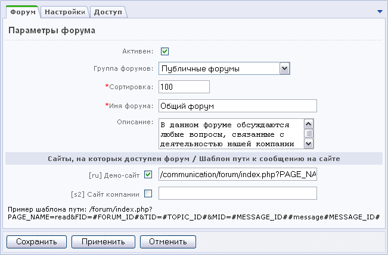

- Откройте страницу управления форумами (Сервисы > Форумы > Список форумов).
- Выберите кнопку Новый форум на Контекстной панели.
- Установите флаг в поле Активен.
- Выберите группу форумов, к которой должен относиться создаваемый форум.
- Укажите относительный "вес" форума. Чем больше значение сортировки, тем ниже в списке форумов будет расположен новый форум.
- В поле Имя форума введите название форума.
- Составьте краткое описание форума. Описание будет показано в публичной части в списке форумов.
- Выберите сайты, на которых должен быть доступен этот форум, и укажите шаблоны пути к сообщениям форума для каждого из этих сайтов (для формирования ссылок в письмах с форума и для индексации сообщений форума в модуле поиска).

- Откройте закладку Настройки и укажите необходимые параметры форума:
- Позволить HTML – использование HTML-кода в тексте сообщения;
- Позволить ссылки (<a href=...>) – использование гиперссылок в сообщении;
- Позволить теги B, U, I (<b> <u> <i>) – выделение текста полужирным, подчеркиванием или курсивом;
- Позволить изображения (<img src=...>) – использование изображений в тексте сообщения;
- Позволить списки (<ul><li>) – создание списков;
- Позволить цитирование (<quote>) – возможность цитировать сообщение другого пользователя;
- Позволить коды (<code>) – использование кодов в сообщении;
- Позволить шрифты (<font color=...>) – возможность изменить цвет текста и шрифт;
- Позволить смайлики – использование смайликов в сообщении.
- Если вы установите флаг в поле Премодерируемый, то сообщения пользователей будут публиковаться на форуме только после проверки модератором (администратором сайта или другим пользователем с соответствующими правами).
- Выберите вариант сортировки сообщений, а также направление сортировки. Если выбрана сортировка по дате последнего сообщения и направление по убыванию, то последние по дате сообщения будут показаны выше, чем более ранние.
- Перейдите на закладку Доступ и установите права для разных групп пользователей на доступ к форуму.
- Нажмите кнопку Сохранить.
Пользователи с правами модератора и выше могут просмотреть IP и ID автора сообщения на форуме (ID посетителя доступен для просмотра при условии, что модуль статистики установлен и пользователю предоставлены права на использование этого модуля). Информация об авторе расположена слева от текста сообщения на форуме. По этим данным можно получить подробную информацию о посетителе и отслеживать его путь по сайту с помощью модуля статистики.